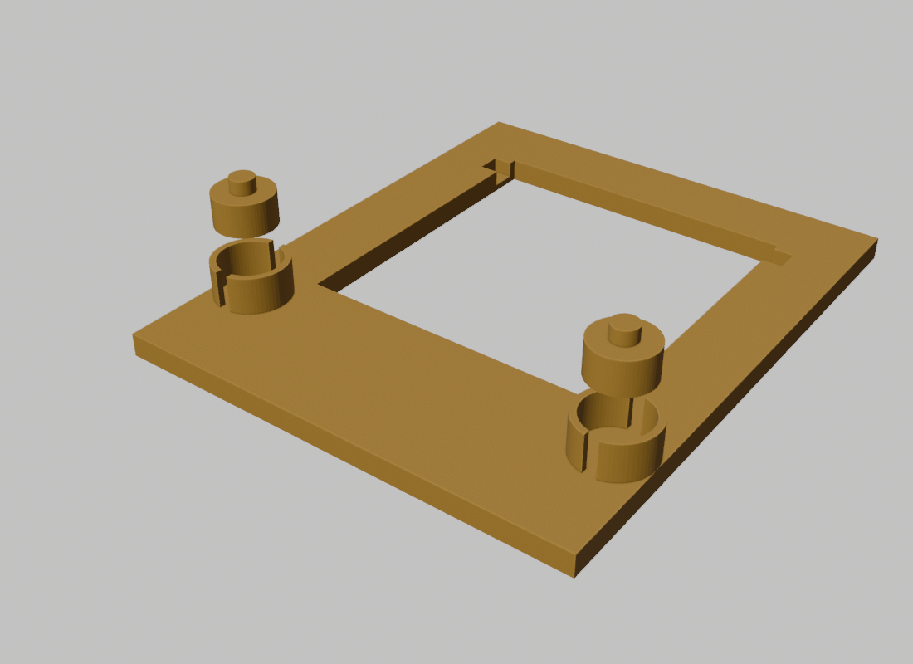
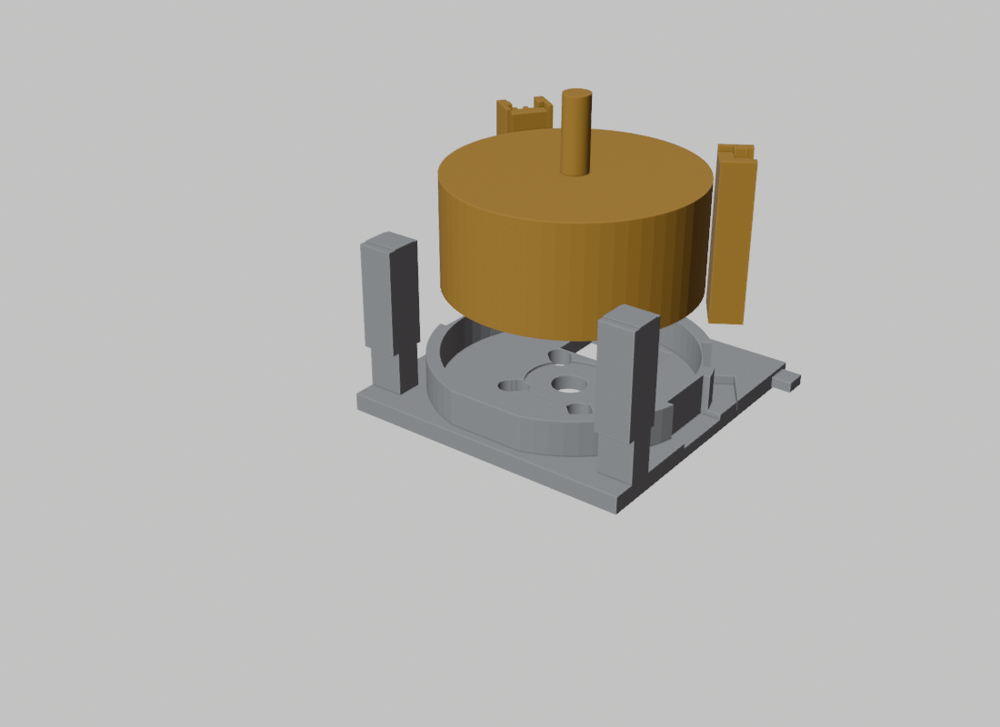
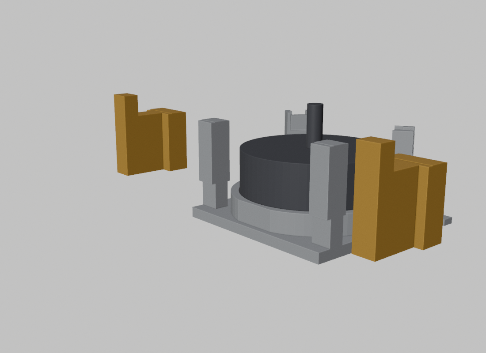
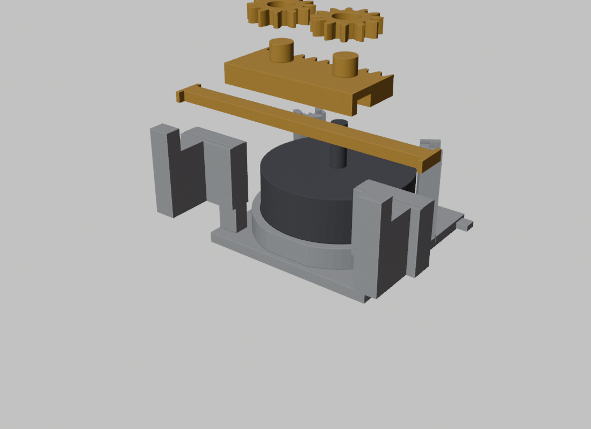
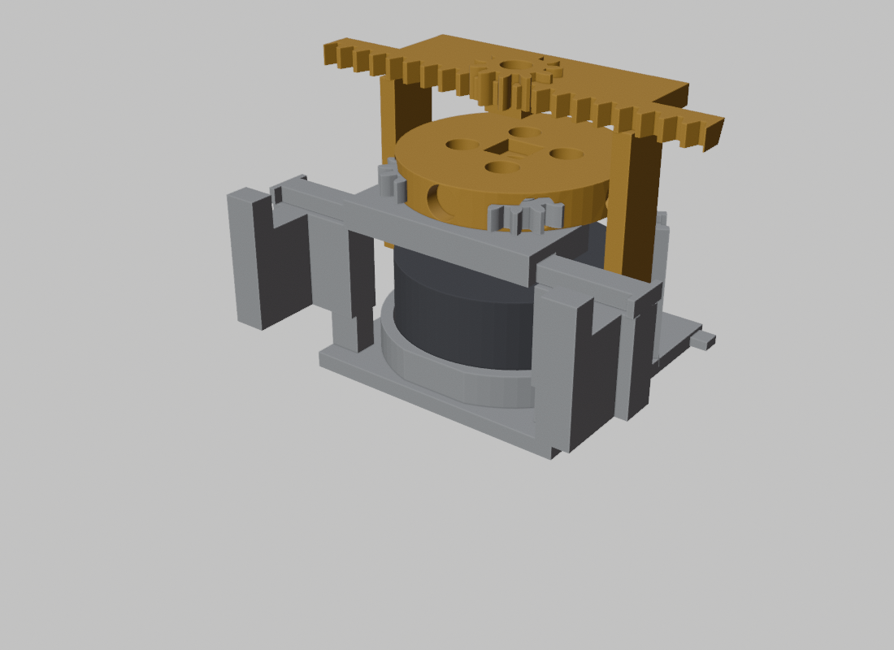
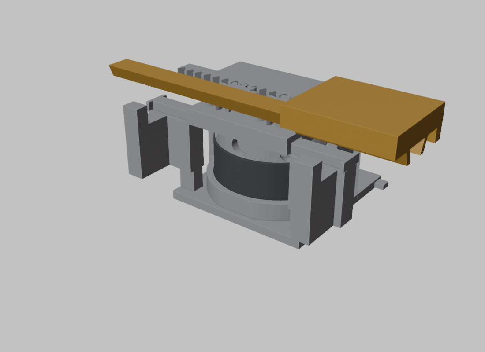
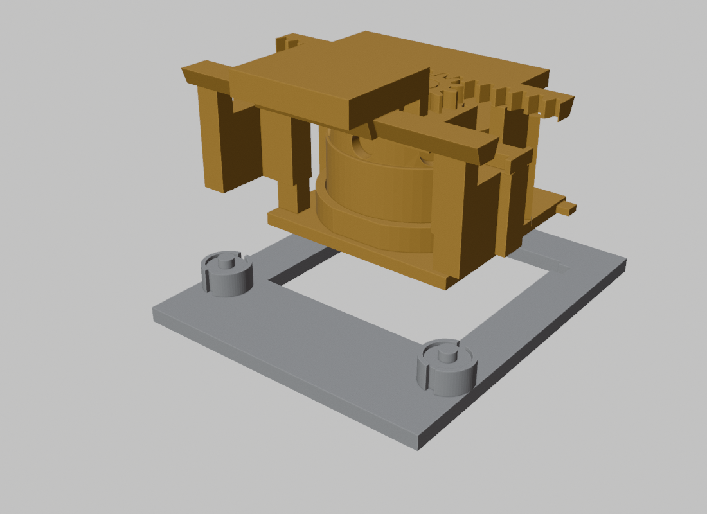
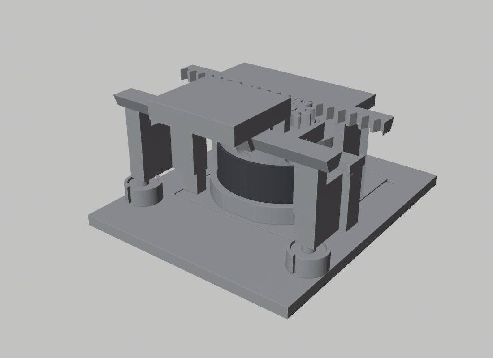

| Деталь | Шт. | Что это |
|---|---|---|
| 01_okantovka_Z | 1 | окантовка с вазами под кнопки и ямками под язычки |
| 02_platforma_Z | 1 | пол: кольцо мотора, стойки бруска, язычки-ось |
| 03a_noga_balki_prav / 03b_noga_balki_lev | 1 + 1 | ножки балки с блоками над кнопками (правая и левая) |
| 03c_balka_Z | 1 | балка под тележкой |
| 04_rejka_stolik_Z | 1 | неподвижная рейка-«столик» со стенками |
| 05_brusok | 1 | брусок под ползуном с упорами хода на концах |
| 06_polzun | 1 | ползун |
| 07_shest_plav_x2 | 2 | плавающие шестерни |
| 08_shest_motora | 1 | шестерня мотора |
| 09_platforma_rotora | 1 | платформа ротора с гнёздами под 8 магнитов |
| 10_stojka_49E_x2 | 2 | стойки датчиков 49E |
| 11_telezhka_Z | 1 | тележка с площадкой |
| Покупное | мотор 2204 (или макет 12_maket_motora), 2 кнопки Ø6.4, 2 × SS49E, 8 магнитов Ø4×1.9, винты М2, клей |
Две кнопки Ø6.4 кладутся сверху в вазы окантовки. Выводы — в щели по бокам вазы.

12).10 — низом в прорези кольца и пола.
03a — справа, левую 03b — слева.
05 — на верх стоек, клей. Широкие концы (упоры хода) — снаружи.06 — пазом снизу на брусок.07 — на оси ползуна.
04 — низом стенок в паз пола, зубьями к шестерням.09: 8 магнитов боком, полюса N/S через один; на торец мотора винтами М2 (в мотор не глубже 1.5 мм).08 — квадратом в гнездо платформы, клей.
03c — на верх ножек, клей.11 — надевается на балку с торца, крючками за хвост балки, рейкой к шестерням.
Весь собранный модуль опускается в окантовку: язычки по бокам пола — в ямки окантовки (это ось качания), низы ножек балки — над кнопками.

Нажал на тележку — модуль наклоняется на язычках, ножки давят на кнопки: щелчок. Тележка ходит ±22, ползун упирается в упоры бруска.
